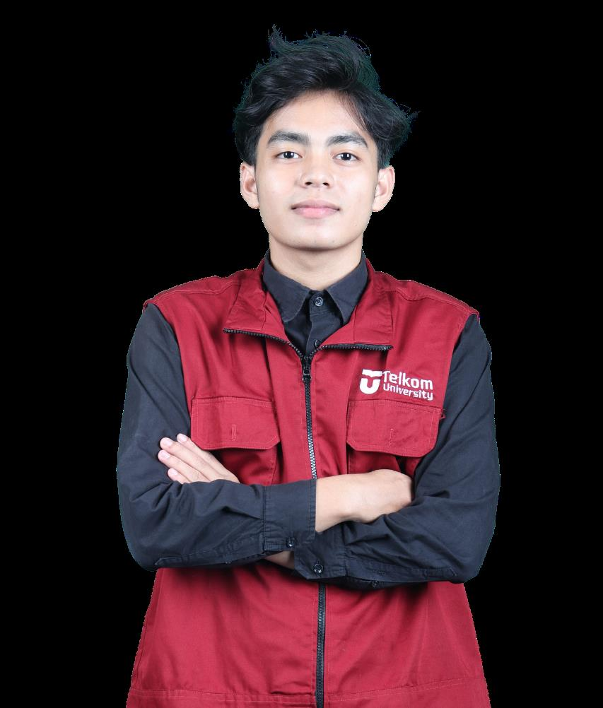

Nazly Rafa Oktafian Nuzqu
Data Analyst / Data Engineer / Data Enthusiast
Final-year Information Systems student who enjoys the full span of data work — from cleaning messy tables and building dashboards, to designing pipelines and experimenting with machine learning models.

About Me
Hi, I'm Nazly 👋 — a final-year Information Systems student at Telkom University Purwokerto, passionate about turning raw data into decisions people can actually act on.
My experience spans data analysis (dashboards, KPI reporting, SQL) at PT Telkom Indonesia and SOKO Financial, data engineering (pipelines, warehousing, orchestration) through independent projects, and machine learning (NLP, computer vision, clustering) through bootcamps and competitions.
I don't box myself into a single title — I'm genuinely curious about the whole data stack, and I pick up whatever tool the problem needs.
- EducationB.Sc. Information Systems
- UniversityTelkom University Purwokerto
- GPA3.93 / 4.00
- Internships4 completed
- FocusAnalytics · Engineering · ML
Skills
Data Analysis & Visualization
Programming
Machine Learning
Database & Engineering
Experience
Data Analyst Intern
SOKO Financial
- End-to-end data analysis supporting financial and business performance monitoring
- Built interactive Looker Studio dashboards for KPI tracking and executive reporting
- Maintained a KPI mastersheet and designed pipeline workflows for data integration and reporting automation
Data Analyst Intern
PT Telekomunikasi Indonesia
- Built analytic dashboards in Looker Studio and BigQuery to track network monitoring product performance
- Analyzed network data with SQL to generate actionable business insights
- Presented findings directly to product owners and stakeholders
Data Scientist Intern
ID/X Partners × Rakamin Academy
- Applied K-Means clustering to segment customers by purchasing behavior and payment method
- Developed a credit risk prediction model with feature selection and validation
Laboratory Assistant
Telkom University Purwokerto
- Mentored 80 students in Python, Data Structures & Algorithms — 40% average improvement in coding ability
- Guided 76 students in database systems: ERD design, normalization, and complex SQL
Projects
A mix of internship work and independent projects across analytics, data engineering, and machine learning. Full code and documentation on GitHub.
Retail E-commerce Data Warehouse
Independent portfolio project · Olist dataset
End-to-end pipeline built on a medallion architecture: raw retail transaction data ingested from PostgreSQL, staged in GCS, modeled in BigQuery with dbt, and orchestrated with Airflow into Looker Studio–ready marts.
Credit Risk Prediction
Independent portfolio project · LendingClub dataset
Logistic regression credit risk model with data leakage removed and class-weight balancing, tracked with MLflow.
ROC-AUC ≈ 0.68
View on GitHub →Public Opinion Sentiment Analysis
AI Engineer Cohort · 2024 Presidential Debate
Bidirectional LSTM model analyzing public sentiment from social media, with preprocessing tuned for Indonesian-language text.
87% accuracy
Customer Behaviour Overview Dashboard
PT Telkom Indonesia
Analytics dashboard tracking network product usage across segments, built on complex BigQuery SQL for behavioral aggregation.
SIPASAR — Customer Segmentation
Dicoding × Pijak × IBM SkillsBuild capstone
AI-powered segmentation dashboard using K-Means and RFM analysis on retail transaction data, deployed via Streamlit.
RitaScreen — AI CV Screening
Independent project
CV screening system combining SBERT embeddings with an XGBoost scoring model, served through a FastAPI backend.
Certifications
AI Engineer Cohort
Dicoding × Pijak 2026 & IBM SkillsBuild
Data Scientist Project Based Internship
ID/X Partners
Data Analyst Bootcamp — Basics to Advanced
Udemy
Fundamental Algorithms
Coding Studio
Fundamental Database MySQL
Coding Studio
Computer & Network Engineering
BNSP
Leadership & Activities
Head of Public Relations
Society of Renewable Energy · 2024–2026
Led an industrial visit collaboration with PT Pertamina Internasional and built 80+ media partnerships across campus SRE branches.
Ministry of Home Affairs Staff
BEM KEMA Telkom University · 2024–2025
Led a 7-person logistics team for a 300-participant competition and coordinated community service for 50+ elderly residents.
Social Media Specialist & Talent
Marketing Crew, Telkom University · 2024–Present
Develops content strategy and scripts for university branding, and serves as on-camera talent for campaign videos.
Let's connect
Open to Data Analyst and Data Engineer roles — happy to walk through any project above in more depth.